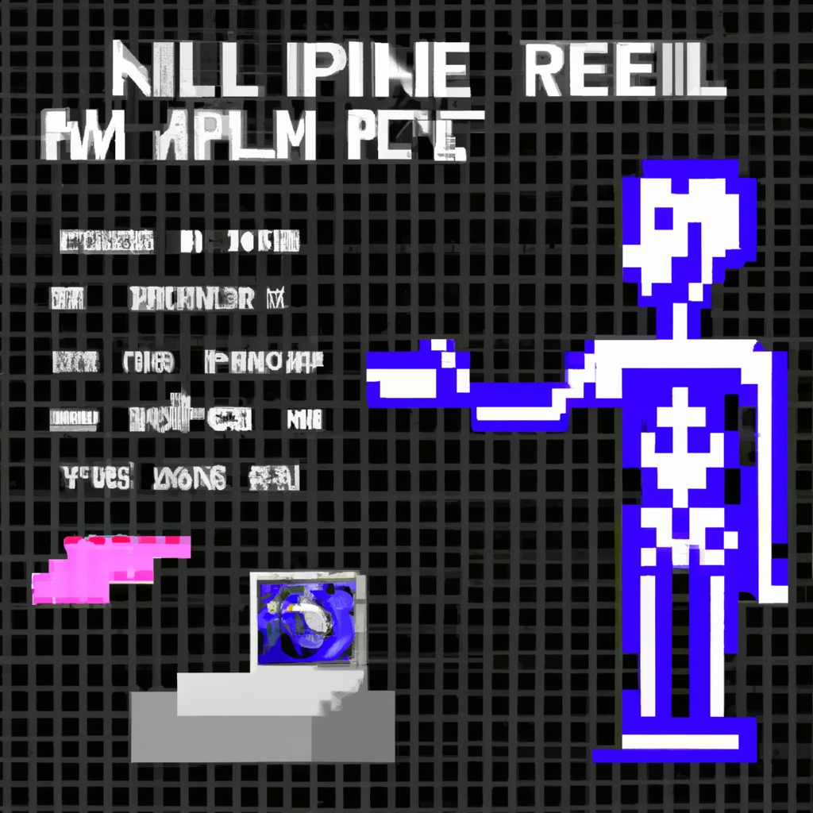

Why AI will never replace the radiologist
In recent years, there has been a lot of hype around the potential of artificial intelligence (AI) to revolutionize the medical industry, particularly with regards to radiology. However, despite the potential, I believe that AI will never replace the radiologist. In this blog post, I will explain why.
First, AI is currently not advanced enough to replace the human eye. A radiologist is trained to recognize and interpret the nuances of an image that a computer algorithm cannot. For example, radiologists are able to detect subtle changes in the shape or size of a tumor, or even identify a tumor that is too small for a computer algorithm to detect. This level of expertise is something that AI will never be able to replicate.
Second, AI algorithms are not able to think critically and make decisions. The radiologist is able to consider the patient’s history, current symptoms, and other factors that may influence the diagnosis. AI algorithms are not able to do this and are limited to the input data they receive.
Finally, AI cannot provide the same level of personalized care as a radiologist. Radiologists are able to talk to patients and discuss their results, providing a personalized experience that is not possible with AI.
In conclusion, I believe that AI will never be able to replace the radiologist. Radiologists are trained to recognize and interpret nuances in an image that AI algorithms cannot, and AI algorithms cannot think critically and make decisions. Additionally, radiologists are able to provide personalized care to patients that AI cannot.